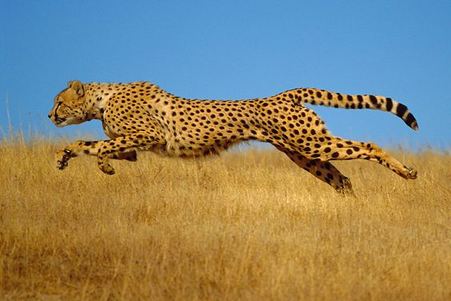

Hewan
Cheetah
Cheetah adalah salah satu hewan tercepat di darat. Mereka memiliki tubuh yang ramping dan kaki yang panjang.
Harimau

Harimau adalah salah satu predator puncak di hutan. Mereka memiliki garis-garis hitam unik di tubuh mereka.
Singa

Singa dikenal sebagai "raja hutan". Mereka adalah hewan sosial yang tinggal dalam kelompok yang disebut kawanan.